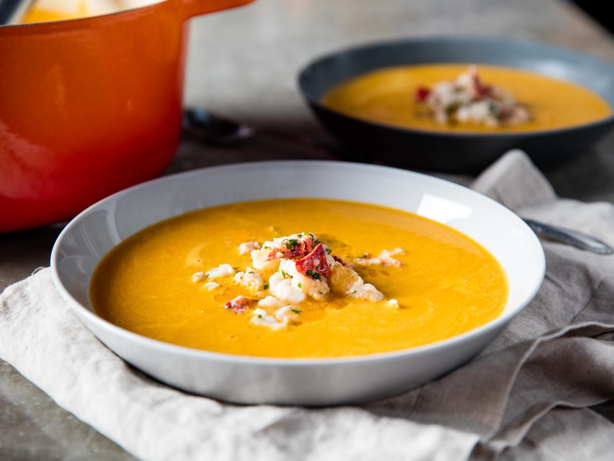

Lobster Bisque

Rich & creamy lobster bisque
Ingredients
- 560g (4) live lobsters
- 115g unsalted butter
- 80ml extra-virgin olive oil
- 340g medium carrots
- 450g medium yellow onions
- 170g large celery ribs
- 4 medium garlic cloves
- 25g tomato paste
- 60ml brandy
- 240ml dry white wine
- 1.2L chicken stock
- 3 sprigs parsley
- 3 sprigs tarragon
- 1 bay leaf
- 120ml heavy cream
- salt and pepper
- cayenne pepper
- fresh chives
- grounded coriander seeds
Steps
- Kill and split lobsters
- Steam lobsters for 3 mins
- Remove meat from shell
- Chop up bodies and shells
- Brown the bodies and shells with butter and olive oil
- Add carrot, celery, onion, continue to cook and brown
- Add tomato paste, brandy, white wine, lobster juices & chicken stock
- Strain, then blend the pot
- Add lobster meat and serve